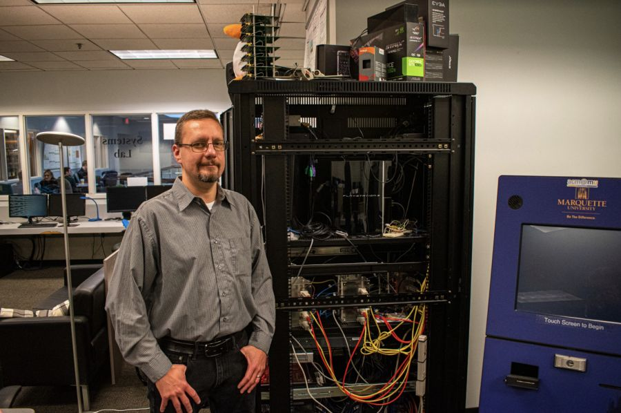
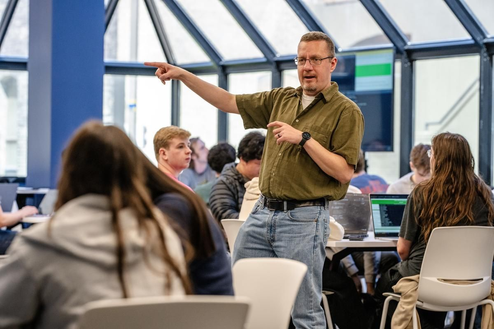

Project director
Dr. Dennis Brylow
Professor and Chair of Computer Science at Marquette University.
At a glance
- Position
- Professor and Chair, Department of Computer Science
- Education
- Ph.D., Purdue University, 2003
- Office
- Cudahy Hall 201C, Marquette University
- Phone
- TBD
- TBD
- Website
- cs.mu.edu/~brylow

Department of Computer Science, Klingler College of Arts and Sciences
Sixteen years of CS teacher training
Dennis Brylow has spent sixteen years building a computer science teaching community in Wisconsin. In 2010 he represented Marquette's computer science faculty in the coalition of state officials, high school teachers, and universities that became PUMP-CS. He has led the project ever since, through workshops, summer institutes, alternative licensure, state standards, and research on how CS teachers are prepared.
He directs Marquette's relationship with Code.org as its Regional Partner for Wisconsin, and his PISCES Lab (Promoting Innovative Systems for Computing Education in Schools) has earned four NSF awards since 2014. Over the past decade he has been principal investigator on just over $5 million in grant funding from the National Science Foundation, Cisco, Google, Intel, and others.
“Computer science has become a foundational skill.”Dennis Brylow, on Wisconsin's first K–12 CS standards, 2017

Highlights in K–12 computer science
- 2010Helps found PUMP-CSPlans Wisconsin's first CS-specific teacher workshops with DPI, teachers, and universities.
- 2014First NSF teacher-preparation awardA two-track ECS and CSP sequence with UW–La Crosse, including a CS methods course for endorsement.
- 2016Certifying teachers across MPSA $1 million NSF award to prepare 200 Milwaukee Public Schools teachers to teach CS.
- 2017Co-chairs Wisconsin's CS standardsWisconsin's first K–12 computer science standards, approved in June 2017.
- 2019Research-practice partnershipA nearly $2 million NSF study of CS education in an urban district, with MPS, AIR, and The Learning Partnership.
- 2020Project {FUTURE}Elementary CS with Sacred Heart University, Cooperative Educational Services (CT), and MPS, reaching 750 teachers.
- 2025NSF Computer Science for All awardBootcamp-based PD and a learning community for ECS teachers in MPS.
Research
Tools for people who design, build, or teach complex systems, with a focus on embedded, real-time, and interrupt-driven systems, programming languages, and software engineering. His Embedded Xinu operating system is used to teach OS courses on real hardware.
He also directs Marquette's NSF-funded Data Science Across the Disciplines REU site, now in its third three-year grant.
Teaching and writing
He has taught Operating Systems at Marquette nearly every spring since 2010, along with Compiler Construction, Programming Languages, Embedded Systems, and Principles of Design.
He is lead co-author, with J. Glenn Brookshear, of the textbook Computer Science: An Overview (11th–13th editions)
Selected publications
- Addressing the Computer Science Teacher Shortage: A Case Study of Wisconsin Public High SchoolsSIGCSE 2025
- Teacher Attitudes & Beliefs in Computer Science (T-ABC)ACM Transactions on Computing Education, 2023
- Unlocking Student Potential With TA-Bot: Timely Submissions and Improved Code StyleSIGCSE 2025
- Can LLMs Be Fair Graders? Only If You Bribe Them with the Right RubricFrontiers in Education 2025
- Using Embedded Xinu to Teach Operating Systems on Baremetal RISC-VSIGCSE 2024
- Static Checking of Interrupt-Driven SoftwareICSE 2001